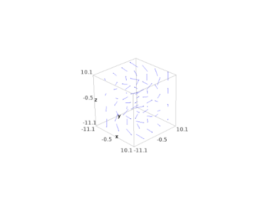
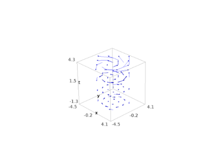
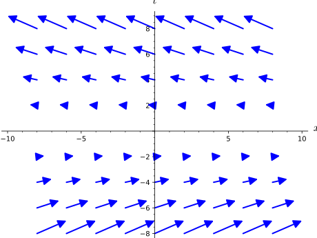

Given two differentiable manifolds \(U\) and \(M\) over the same topological field
\(K\) and a differentiable map
\[\Phi:\ U \longrightarrow M,\]
we define a vector field along\(U\)with values on\(M\) to be a
differentiable map
\[v:\ U \longrightarrow TM\]
(\(TM\) being the tangent bundle of \(M\)) such that
\[\forall p \in U,\ v(p) \in T_{\Phi(p)}M.\]
The standard case of vector fields on a differentiable manifold corresponds
to \(U = M\) and \(\Phi = \mathrm{Id}_M\). Other common cases are \(\Phi\)
being an immersion and \(\Phi\) being a curve in \(M\) (\(U\) is then an open
interval of \(\RR\)).
Vector fields are implemented via two classes: VectorFieldParal and
VectorField, depending respectively whether the manifold \(M\)
is parallelizable or not, i.e. whether the bundle \(TM\) is trivial or not.
AUTHORS:
Eric Gourgoulhon, Michal Bejger (2013-2015) : initial version
Marco Mancini (2015): parallelization of vector field plots
Travis Scrimshaw (2016): review tweaks
Eric Gourgoulhon (2017): vector fields inherit from multivector fields
Eric Gourgoulhon (2018): dot and cross products, operators norm and curl
An instance of this class is a vector field along a differentiable
manifold \(U\) with values on a differentiable manifold \(M\), via a
differentiable map \(U \rightarrow M\). More precisely, given a
differentiable map
\[\Phi:\ U \longrightarrow M,\]
a vector field along\(U\)with values on\(M\) is a differentiable map
\[v:\ U \longrightarrow TM\]
(\(TM\) being the tangent bundle of \(M\)) such that
\[\forall p \in U,\ v(p) \in T_{\Phi(p)}M.\]
The standard case of vector fields on a differentiable manifold
corresponds to \(U = M\) and \(\Phi = \mathrm{Id}_M\). Other common cases are
\(\Phi\) being an immersion and \(\Phi\) being a curve in \(M\) (\(U\) is then an
open interval of \(\RR\)).
Note
If \(M\) is parallelizable, then
VectorFieldParalmust be used instead.
INPUT:
vector_field_module – module \(\mathfrak{X}(U,\Phi)\) of vector
fields along \(U\) with values on \(M\supset\Phi(U)\)
name – (default: None) name given to the vector field
latex_name – (default: None) LaTeX symbol to denote the vector
field; if none is provided, the LaTeX symbol is set to name
EXAMPLES:
A vector field on a non-parallelizable 2-dimensional manifold:
sage: M=Manifold(2,'M')sage: U=M.open_subset('U');V=M.open_subset('V')sage: M.declare_union(U,V)# M is the union of U and Vsage: c_xy.<x,y>=U.chart();c_tu.<t,u>=V.chart()sage: transf=c_xy.transition_map(c_tu,(x+y,x-y),intersection_name='W',....: restrictions1=x>0,restrictions2=t+u>0)sage: inv=transf.inverse()sage: W=U.intersection(V)sage: eU=c_xy.frame();eV=c_tu.frame()sage: c_tuW=c_tu.restrict(W);eVW=c_tuW.frame()sage: v=M.vector_field(name='v');vVector field v on the 2-dimensional differentiable manifold Msage: v.parent()Module X(M) of vector fields on the 2-dimensional differentiable manifold M
The vector field is first defined on the domain \(U\) by means of its
components with respect to the frame eU:
sage: v[eU,:]=[-y,1+x]
The components with respect to the frame eV are then deduced
by continuation of the components with respect to the frame eVW
on the domain \(W = U \cap V\), expressed in terms on the coordinates
covering \(V\):
The result is defined on the intersection of the vector field’s
domain and the scalar field’s one:
sage: s=v(f.restrict(U));sScalar field v(f) on the Open subset U of the 2-dimensional differentiable manifold Msage: s==v(f).restrict(U)Truesage: s=v(f.restrict(W));sScalar field v(f) on the Open subset W of the 2-dimensional differentiable manifold Msage: s.display()v(f): W → ℝ (x, y) ↦ 2*x^2 - 2*y^2 + 2*x + 2*y (t, u) ↦ 2*t*u + 2*tsage: s=v.restrict(U)(f);sScalar field v(f) on the Open subset U of the 2-dimensional differentiable manifold Msage: s.display()v(f): U → ℝ (x, y) ↦ 2*x^2 - 2*y^2 + 2*x + 2*yon W: (t, u) ↦ 2*t*u + 2*tsage: s=v.restrict(U)(f.restrict(V));sScalar field v(f) on the Open subset W of the 2-dimensional differentiable manifold Msage: s.display()v(f): W → ℝ (x, y) ↦ 2*x^2 - 2*y^2 + 2*x + 2*y (t, u) ↦ 2*t*u + 2*t
Return the cross product of self with another vector field (with
respect to a given metric), assuming that the domain of self is
3-dimensional.
If self is a vector field \(u\) on a 3-dimensional differentiable
orientable manifold \(M\) and other is a vector field \(v\) on \(M\),
the cross product (also called vector product) of\(u\)by\(v\)
with respect to a pseudo-Riemannian metric \(g\) on \(M\) is the vector
field \(w = u\times v\) defined by
where \(\epsilon\) is the volume 3-form (Levi-Civita tensor) of \(g\) (cf.
volume_form())
Note
The method cross_product is meaningful only if for vector fields on a
3-dimensional manifold.
INPUT:
other – a vector field, defined on the same domain as self
metric – (default: None) the pseudo-Riemannian metric \(g\)
involved in the definition of the cross product; if none is
provided, the domain of self is supposed to be endowed with a
default metric (i.e. is supposed to be pseudo-Riemannian manifold,
see
PseudoRiemannianManifold)
and the latter is used to define the cross product
OUTPUT:
instance of VectorField representing the cross product of
self by other.
EXAMPLES:
Cross product in the Euclidean 3-space:
sage: M.<x,y,z>=EuclideanSpace()sage: u=M.vector_field(-y,x,0,name='u')sage: v=M.vector_field(x,y,0,name='v')sage: w=u.cross_product(v);wVector field u x v on the Euclidean space E^3sage: w.display()u x v = (-x^2 - y^2) e_z
A shortcut alias of cross_product is cross:
sage: u.cross(v)==wTrue
The cross product of a vector field with itself is zero:
sage: u.cross_product(u).display()u x u = 0
Cross product with respect to a metric that is not the default one:
sage: h=M.riemannian_metric('h')sage: h[1,1],h[2,2],h[3,3]=1/(1+y^2),1/(1+z^2),1/(1+x^2)sage: w=u.cross_product(v,metric=h);wVector field on the Euclidean space E^3sage: w.display()-(x^2 + y^2)*sqrt(x^2 + 1)/(sqrt(y^2 + 1)*sqrt(z^2 + 1)) e_z
Cross product of two vector fields along a curve (arc of a helix):
sage: R.<t>=manifolds.RealLine()sage: C=M.curve((cos(t),sin(t),t),(t,0,2*pi),name='C')sage: u=C.tangent_vector_field()sage: u.display()C' = -sin(t) e_x + cos(t) e_y + e_zsage: I=C.domain();IReal interval (0, 2*pi)sage: v=I.vector_field(-cos(t),sin(t),0,dest_map=C)sage: v.display()-cos(t) e_x + sin(t) e_ysage: w=u.cross_product(v);wVector field along the Real interval (0, 2*pi) with values on the Euclidean space E^3sage: w.parent().destination_map()Curve C in the Euclidean space E^3sage: w.display()-sin(t) e_x - cos(t) e_y + (2*cos(t)^2 - 1) e_z
Cross product between a vector field along the curve and a vector field
on the ambient Euclidean space:
sage: e_x=M.cartesian_frame()[1]sage: w=u.cross_product(e_x);wVector field C' x e_x along the Real interval (0, 2*pi) with values on the Euclidean space E^3sage: w.display()C' x e_x = e_y - cos(t) e_z
Return the cross product of self with another vector field (with
respect to a given metric), assuming that the domain of self is
3-dimensional.
If self is a vector field \(u\) on a 3-dimensional differentiable
orientable manifold \(M\) and other is a vector field \(v\) on \(M\),
the cross product (also called vector product) of\(u\)by\(v\)
with respect to a pseudo-Riemannian metric \(g\) on \(M\) is the vector
field \(w = u\times v\) defined by
where \(\epsilon\) is the volume 3-form (Levi-Civita tensor) of \(g\) (cf.
volume_form())
Note
The method cross_product is meaningful only if for vector fields on a
3-dimensional manifold.
INPUT:
other – a vector field, defined on the same domain as self
metric – (default: None) the pseudo-Riemannian metric \(g\)
involved in the definition of the cross product; if none is
provided, the domain of self is supposed to be endowed with a
default metric (i.e. is supposed to be pseudo-Riemannian manifold,
see
PseudoRiemannianManifold)
and the latter is used to define the cross product
OUTPUT:
instance of VectorField representing the cross product of
self by other.
EXAMPLES:
Cross product in the Euclidean 3-space:
sage: M.<x,y,z>=EuclideanSpace()sage: u=M.vector_field(-y,x,0,name='u')sage: v=M.vector_field(x,y,0,name='v')sage: w=u.cross_product(v);wVector field u x v on the Euclidean space E^3sage: w.display()u x v = (-x^2 - y^2) e_z
A shortcut alias of cross_product is cross:
sage: u.cross(v)==wTrue
The cross product of a vector field with itself is zero:
sage: u.cross_product(u).display()u x u = 0
Cross product with respect to a metric that is not the default one:
sage: h=M.riemannian_metric('h')sage: h[1,1],h[2,2],h[3,3]=1/(1+y^2),1/(1+z^2),1/(1+x^2)sage: w=u.cross_product(v,metric=h);wVector field on the Euclidean space E^3sage: w.display()-(x^2 + y^2)*sqrt(x^2 + 1)/(sqrt(y^2 + 1)*sqrt(z^2 + 1)) e_z
Cross product of two vector fields along a curve (arc of a helix):
sage: R.<t>=manifolds.RealLine()sage: C=M.curve((cos(t),sin(t),t),(t,0,2*pi),name='C')sage: u=C.tangent_vector_field()sage: u.display()C' = -sin(t) e_x + cos(t) e_y + e_zsage: I=C.domain();IReal interval (0, 2*pi)sage: v=I.vector_field(-cos(t),sin(t),0,dest_map=C)sage: v.display()-cos(t) e_x + sin(t) e_ysage: w=u.cross_product(v);wVector field along the Real interval (0, 2*pi) with values on the Euclidean space E^3sage: w.parent().destination_map()Curve C in the Euclidean space E^3sage: w.display()-sin(t) e_x - cos(t) e_y + (2*cos(t)^2 - 1) e_z
Cross product between a vector field along the curve and a vector field
on the ambient Euclidean space:
sage: e_x=M.cartesian_frame()[1]sage: w=u.cross_product(e_x);wVector field C' x e_x along the Real interval (0, 2*pi) with values on the Euclidean space E^3sage: w.display()C' x e_x = e_y - cos(t) e_z
Return the curl of self with respect to a given metric, assuming
that the domain of self is 3-dimensional.
If self is a vector field \(v\) on a 3-dimensional differentiable
orientable manifold \(M\), the curl of \(v\) with respect to a metric \(g\)
on \(M\) is the vector field defined by
\[\mathrm{curl}\, v = (*(\mathrm{d} v^\flat))^\sharp\]
where \(v^\flat\) is the 1-form associated to \(v\) by the metric \(g\) (see
down()),
\(*(\mathrm{d} v^\flat)\) is the Hodge dual with respect to \(g\) of the
2-form \(\mathrm{d} v^\flat\) (exterior derivative of \(v^\flat\)) (see
hodge_dual())
and
\((*(\mathrm{d} v^\flat))^\sharp\) is corresponding vector field by
\(g\)-duality (see
up()).
where \(\nabla\) is the Levi-Civita connection of \(g\) (cf.
LeviCivitaConnection)
and \(\epsilon\) the volume 3-form (Levi-Civita tensor) of \(g\) (cf.
volume_form())
Note
The method curl is meaningful only if self is a vector
field on a 3-dimensional manifold.
INPUT:
metric – (default: None) the pseudo-Riemannian metric \(g\)
involved in the definition of the curl; if none is provided, the
domain of self is supposed to be endowed with a default metric
(i.e. is supposed to be pseudo-Riemannian manifold, see
PseudoRiemannianManifold)
and the latter is used to define the curl
OUTPUT:
instance of VectorField representing the curl of self
EXAMPLES:
Curl of a vector field in the Euclidean 3-space:
sage: M.<x,y,z>=EuclideanSpace()sage: v=M.vector_field(-y,x,0,name='v')sage: v.display()v = -y e_x + x e_ysage: s=v.curl();sVector field curl(v) on the Euclidean space E^3sage: s.display()curl(v) = 2 e_z
The function curl() from the
operators module can be used instead of the
method curl():
sage: f=M.scalar_field(function('F')(x,y,z))sage: gradf=f.gradient()sage: gradf.display()d(F)/dx e_x + d(F)/dy e_y + d(F)/dz e_zsage: s=curl(gradf);sVector field on the Euclidean space E^3sage: s.display()0
Return the scalar product of self with another vector field (with
respect to a given metric).
If self is the vector field \(u\) and other is the vector field \(v\),
the scalar product of\(u\)by\(v\) with respect to a given
pseudo-Riemannian metric \(g\) is the scalar field \(s\) defined by
\[s = u\cdot v = g(u,v) = g_{ij} u^i v^j\]
INPUT:
other – a vector field, defined on the same domain as self
metric – (default: None) the pseudo-Riemannian metric \(g\)
involved in the definition of the scalar product; if none is
provided, the domain of self is supposed to be endowed with a
default metric (i.e. is supposed to be pseudo-Riemannian manifold,
see
PseudoRiemannianManifold)
and the latter is used to define the scalar product
OUTPUT:
instance of
DiffScalarField
representing the scalar product of self by other.
EXAMPLES:
Scalar product in the Euclidean plane:
sage: M.<x,y>=EuclideanSpace()sage: u=M.vector_field(x,y,name='u')sage: v=M.vector_field(y,x,name='v')sage: s=u.dot_product(v);sScalar field u.v on the Euclidean plane E^2sage: s.display()u.v: E^2 → ℝ (x, y) ↦ 2*x*y
A shortcut alias of dot_product is dot:
sage: u.dot(v)==sTrue
A test of orthogonality:
sage: v[:]=-y,xsage: u.dot_product(v)==0True
Scalar product with respect to a metric that is not the default one:
sage: h=M.riemannian_metric('h')sage: h[1,1],h[2,2]=1/(1+y^2),1/(1+x^2)sage: s=u.dot_product(v,metric=h);sScalar field h(u,v) on the Euclidean plane E^2sage: s.display()h(u,v): E^2 → ℝ (x, y) ↦ -(x^3*y - x*y^3)/((x^2 + 1)*y^2 + x^2 + 1)
Scalar product of two vector fields along a curve (a lemniscate of
Gerono):
sage: R.<t>=manifolds.RealLine()sage: C=M.curve([sin(t),sin(2*t)/2],(t,0,2*pi),name='C')sage: u=C.tangent_vector_field(name='u')sage: u.display()u = cos(t) e_x + (2*cos(t)^2 - 1) e_ysage: I=C.domain();IReal interval (0, 2*pi)sage: v=I.vector_field(cos(t),-1,dest_map=C,name='v')sage: v.display()v = cos(t) e_x - e_ysage: s=u.dot_product(v);sScalar field u.v on the Real interval (0, 2*pi)sage: s.display()u.v: (0, 2*pi) → ℝ t ↦ sin(t)^2
Scalar product between a vector field along the curve and a vector
field on the ambient Euclidean plane:
sage: e_x=M.cartesian_frame()[1]sage: s=u.dot_product(e_x);sScalar field u.e_x on the Real interval (0, 2*pi)sage: s.display()u.e_x: (0, 2*pi) → ℝ t ↦ cos(t)
Return the scalar product of self with another vector field (with
respect to a given metric).
If self is the vector field \(u\) and other is the vector field \(v\),
the scalar product of\(u\)by\(v\) with respect to a given
pseudo-Riemannian metric \(g\) is the scalar field \(s\) defined by
\[s = u\cdot v = g(u,v) = g_{ij} u^i v^j\]
INPUT:
other – a vector field, defined on the same domain as self
metric – (default: None) the pseudo-Riemannian metric \(g\)
involved in the definition of the scalar product; if none is
provided, the domain of self is supposed to be endowed with a
default metric (i.e. is supposed to be pseudo-Riemannian manifold,
see
PseudoRiemannianManifold)
and the latter is used to define the scalar product
OUTPUT:
instance of
DiffScalarField
representing the scalar product of self by other.
EXAMPLES:
Scalar product in the Euclidean plane:
sage: M.<x,y>=EuclideanSpace()sage: u=M.vector_field(x,y,name='u')sage: v=M.vector_field(y,x,name='v')sage: s=u.dot_product(v);sScalar field u.v on the Euclidean plane E^2sage: s.display()u.v: E^2 → ℝ (x, y) ↦ 2*x*y
A shortcut alias of dot_product is dot:
sage: u.dot(v)==sTrue
A test of orthogonality:
sage: v[:]=-y,xsage: u.dot_product(v)==0True
Scalar product with respect to a metric that is not the default one:
sage: h=M.riemannian_metric('h')sage: h[1,1],h[2,2]=1/(1+y^2),1/(1+x^2)sage: s=u.dot_product(v,metric=h);sScalar field h(u,v) on the Euclidean plane E^2sage: s.display()h(u,v): E^2 → ℝ (x, y) ↦ -(x^3*y - x*y^3)/((x^2 + 1)*y^2 + x^2 + 1)
Scalar product of two vector fields along a curve (a lemniscate of
Gerono):
sage: R.<t>=manifolds.RealLine()sage: C=M.curve([sin(t),sin(2*t)/2],(t,0,2*pi),name='C')sage: u=C.tangent_vector_field(name='u')sage: u.display()u = cos(t) e_x + (2*cos(t)^2 - 1) e_ysage: I=C.domain();IReal interval (0, 2*pi)sage: v=I.vector_field(cos(t),-1,dest_map=C,name='v')sage: v.display()v = cos(t) e_x - e_ysage: s=u.dot_product(v);sScalar field u.v on the Real interval (0, 2*pi)sage: s.display()u.v: (0, 2*pi) → ℝ t ↦ sin(t)^2
Scalar product between a vector field along the curve and a vector
field on the ambient Euclidean plane:
sage: e_x=M.cartesian_frame()[1]sage: s=u.dot_product(e_x);sScalar field u.e_x on the Real interval (0, 2*pi)sage: s.display()u.e_x: (0, 2*pi) → ℝ t ↦ cos(t)
Return the norm of self (with respect to a given metric).
The norm of a vector field \(v\) with respect to a given
pseudo-Riemannian metric \(g\) is the scalar field \(\|v\|\) defined by
\[\|v\| = \sqrt{g(v,v)}\]
Note
If the metric \(g\) is not positive definite, it may be that \(\|v\|\)
takes imaginary values.
INPUT:
metric – (default: None) the pseudo-Riemannian metric \(g\)
involved in the definition of the norm; if none is
provided, the domain of self is supposed to be endowed with a
default metric (i.e. is supposed to be pseudo-Riemannian manifold,
see
PseudoRiemannianManifold)
and the latter is used to define the norm
Plot the vector field in a Cartesian graph based on the coordinates
of some ambient chart.
The vector field is drawn in terms of two (2D graphics) or three
(3D graphics) coordinates of a given chart, called hereafter the
ambient chart.
The vector field’s base points \(p\) (or their images \(\Phi(p)\) by some
differentiable mapping \(\Phi\)) must lie in the ambient chart’s domain.
INPUT:
chart – (default: None) the ambient chart (see above); if
None, the default chart of the vector field’s domain is used
ambient_coords – (default: None) tuple containing the 2
or 3 coordinates of the ambient chart in terms of which the plot
is performed; if None, all the coordinates of the ambient
chart are considered
mapping – DiffMap
(default: None); differentiable map \(\Phi\) providing the link
between the vector field’s domain and the ambient chart chart;
if None, the identity map is assumed
chart_domain – (default: None) chart on the vector field’s
domain to define the points at which vector arrows are to be plotted;
if None, the default chart of the vector field’s domain is used
fixed_coords – (default: None) dictionary with keys the
coordinates of chart_domain that are kept fixed and with values
the value of these coordinates; if None, all the coordinates of
chart_domain are used
ranges – (default: None) dictionary with keys the
coordinates of chart_domain to be used and values tuples
(x_min,x_max) specifying the coordinate range for the plot;
if None, the entire coordinate range declared during the
construction of chart_domain is considered (with -Infinity
replaced by -max_range and +Infinity by max_range)
number_values – (default: None) either an integer or a
dictionary with keys the coordinates of chart_domain to be
used and values the number of values of the coordinate for sampling
the part of the vector field’s domain involved in the plot ; if
number_values is a single integer, it represents the number of
values for all coordinates; if number_values is None, it is
set to 9 for a 2D plot and to 5 for a 3D plot
steps – (default: None) dictionary with keys the
coordinates of chart_domain to be used and values the step
between each constant value of the coordinate; if None, the
step is computed from the coordinate range (specified in ranges)
and number_values; on the contrary, if the step is provided
for some coordinate, the corresponding number of values is deduced
from it and the coordinate range
parameters – (default: None) dictionary giving the numerical
values of the parameters that may appear in the coordinate expression
of the vector field (see example below)
label_axes – (default: True) boolean determining whether
the labels of the coordinate axes of chart shall be added to
the graph; can be set to False if the graph is 3D and must be
superposed with another graph
color – (default: ‘blue’) color of the arrows representing
the vectors
max_range – (default: 8) numerical value substituted to
+Infinity if the latter is the upper bound of the range of a
coordinate for which the plot is performed over the entire coordinate
range (i.e. for which no specific plot range has been set in
ranges); similarly -max_range is the numerical valued
substituted for -Infinity
scale – (default: 1) value by which the lengths of the arrows
representing the vectors is multiplied
**extra_options – extra options for the arrow plot, like
linestyle, width or arrowsize (see
arrow2d() and
arrow3d() for details)
OUTPUT:
a graphic object, either an instance of
Graphics for a 2D plot (i.e. based on
2 coordinates of chart) or an instance of
Graphics3d for a 3D plot (i.e.
based on 3 coordinates of chart)
EXAMPLES:
Plot of a vector field on a 2-dimensional manifold:
sage: M=Manifold(2,'M')sage: X.<x,y>=M.chart()sage: v=M.vector_field(-y,x,name='v')sage: v.display()v = -y ∂/∂x + x ∂/∂ysage: v.plot()Graphics object consisting of 80 graphics primitives
Plot with various options:
sage: v.plot(scale=0.5,color='green',linestyle='--',width=1,....: arrowsize=6)Graphics object consisting of 80 graphics primitives
sage: v.plot(max_range=4,number_values=5,scale=0.5)Graphics object consisting of 24 graphics primitives
Plot using parallel computation:
sage: Parallelism().set(nproc=2)sage: v.plot(scale=0.5,number_values=10,linestyle='--',width=1,....: arrowsize=6)Graphics object consisting of 100 graphics primitives
sage: Parallelism().set(nproc=1)# switch off parallelization
Plots along a line of fixed coordinate:
sage: v.plot(fixed_coords={x:-2})Graphics object consisting of 9 graphics primitives
sage: v.plot(fixed_coords={y:1})Graphics object consisting of 9 graphics primitives
Let us now consider a vector field on a 4-dimensional manifold:
sage: v.plot()Traceback (most recent call last):...ValueError: the number of ambient coordinates must be either 2 or 3, not 4
Rather, we have to select some coordinates for the plot, via
the argument ambient_coords. For instance, for a 3D plot:
sage: v.plot(ambient_coords=(x,y,z),fixed_coords={t:1},# long time....: number_values=4)Graphics3d Object

sage: v.plot(ambient_coords=(x,y,t),fixed_coords={z:0},# long time....: ranges={x:(-2,2),y:(-2,2),t:(-1,4)},....: number_values=4)Graphics3d Object

or, for a 2D plot:
sage: v.plot(ambient_coords=(x,y),fixed_coords={t:1,z:0})# long timeGraphics object consisting of 80 graphics primitives
sage: v.plot(ambient_coords=(x,t),fixed_coords={y:1,z:0})# long timeGraphics object consisting of 72 graphics primitives

An example of plot via a differential mapping: plot of a vector field
tangent to a 2-sphere viewed in \(\RR^3\):
sage: S2=Manifold(2,'S^2')sage: U=S2.open_subset('U')# the open set covered by spherical coord.sage: XS.<th,ph>=U.chart(r'th:(0,pi):\theta ph:(0,2*pi):\phi')sage: R3=Manifold(3,'R^3')sage: X3.<x,y,z>=R3.chart()sage: F=S2.diff_map(R3,{(XS,X3):[sin(th)*cos(ph),....: sin(th)*sin(ph),cos(th)]},name='F')sage: F.display()# the standard embedding of S^2 into R^3F: S^2 → R^3on U: (th, ph) ↦ (x, y, z) = (cos(ph)*sin(th), sin(ph)*sin(th), cos(th))sage: v=XS.frame()[1];v# the coordinate vector ∂/∂phiVector field ∂/∂ph on the Open subset U of the 2-dimensional differentiable manifold S^2sage: graph_v=v.plot(chart=X3,mapping=F,label_axes=False)sage: graph_S2=XS.plot(chart=X3,mapping=F,number_values=9)sage: graph_v+graph_S2Graphics3d Object
Note that the default values of some arguments of the method plot
are stored in the dictionary plot.options:
sage: v.plot.options# random (dictionary output){'color': 'blue', 'max_range': 8, 'scale': 1}
so that they can be adjusted by the user:
sage: v.plot.options['color']='red'
From now on, all plots of vector fields will use red as the default
color. To restore the original default options, it suffices to type:
Vector field along a differentiable manifold, with values on a
parallelizable manifold.
An instance of this class is a vector field along a differentiable
manifold \(U\) with values on a parallelizable manifold \(M\), via a
differentiable map \(\Phi: U \rightarrow M\). More precisely, given
a differentiable map
\[\Phi:\ U \longrightarrow M,\]
a vector field along\(U\)with values on\(M\) is a differentiable map
\[v:\ U \longrightarrow TM\]
(\(TM\) being the tangent bundle of \(M\)) such that
\[\forall p \in U,\ v(p) \in T_{\Phi(p)}M.\]
The standard case of vector fields on a differentiable manifold
corresponds to \(U = M\) and \(\Phi = \mathrm{Id}_M\). Other common cases
are \(\Phi\) being an immersion and \(\Phi\) being a curve in \(M\) (\(U\)
is then an open interval of \(\RR\)).
Note
If \(M\) is not parallelizable, then
VectorFieldmust be used instead.
INPUT:
vector_field_module – free module \(\mathfrak{X}(U,\Phi)\) of vector
fields along \(U\) with values on \(M\supset\Phi(U)\)
name – (default: None) name given to the vector field
latex_name – (default: None) LaTeX symbol to denote the vector
field; if none is provided, the LaTeX symbol is set to name
EXAMPLES:
A vector field on a parallelizable 3-dimensional manifold:
sage: M=Manifold(3,'M')sage: c_xyz.<x,y,z>=M.chart()sage: v=M.vector_field(name='V');vVector field V on the 3-dimensional differentiable manifold Msage: latex(v)V
Vector fields are considered as elements of a module over the ring
(algebra) of scalar fields on \(M\):
sage: v.parent()Free module X(M) of vector fields on the 3-dimensional differentiable manifold Msage: v.parent().base_ring()Algebra of differentiable scalar fields on the 3-dimensional differentiable manifold Msage: v.parent()isM.vector_field_module()True
A vector field is a tensor field of rank 1 and of type \((1,0)\):
sage: v.tensor_rank()1sage: v.tensor_type()(1, 0)
Components of a vector field with respect to a given frame:
The range of the indices depends on the convention set for the manifold:
sage: M=Manifold(3,'M',start_index=1)sage: c_xyz.<x,y,z>=M.chart()sage: e=M.vector_frame('e');M.set_default_frame(e)sage: v=M.vector_field(1+y,4*x*z,9,name='V')sage: v[0]Traceback (most recent call last):...IndexError: index out of range: 0 not in [1, 3]sage: v[1]# OKy + 1
A vector field acts on scalar fields (derivation along the vector field):
sage: M=Manifold(2,'M')sage: c_cart.<x,y>=M.chart()sage: f=M.scalar_field(x*y^2,name='f')sage: v=M.vector_field(-y,x,name='v')sage: v.display()v = -y ∂/∂x + x ∂/∂ysage: v(f)Scalar field v(f) on the 2-dimensional differentiable manifold Msage: v(f).expr()2*x^2*y - y^3sage: latex(v(f))v\left(f\right)
Example of a vector field associated with a non-trivial map \(\Phi\);
a vector field along a curve in \(M\):
sage: R=Manifold(1,'R')sage: T.<t>=R.chart()# canonical chart on Rsage: Phi=R.diff_map(M,[cos(t),sin(t)],name='Phi');PhiDifferentiable map Phi from the 1-dimensional differentiable manifold R to the 2-dimensional differentiable manifold Msage: Phi.display()Phi: R → M t ↦ (x, y) = (cos(t), sin(t))sage: w=R.vector_field(-sin(t),cos(t),dest_map=Phi,name='w');wVector field w along the 1-dimensional differentiable manifold R with values on the 2-dimensional differentiable manifold Msage: w.parent()Free module X(R,Phi) of vector fields along the 1-dimensional differentiable manifold R mapped into the 2-dimensional differentiable manifold Msage: w.display()w = -sin(t) ∂/∂x + cos(t) ∂/∂y
Value at a given point:
sage: p=R((0,),name='p');pPoint p on the 1-dimensional differentiable manifold Rsage: w.at(p)Tangent vector w at Point Phi(p) on the 2-dimensional differentiable manifold Msage: w.at(p).display()w = ∂/∂ysage: w.at(p)==v.at(Phi(p))True